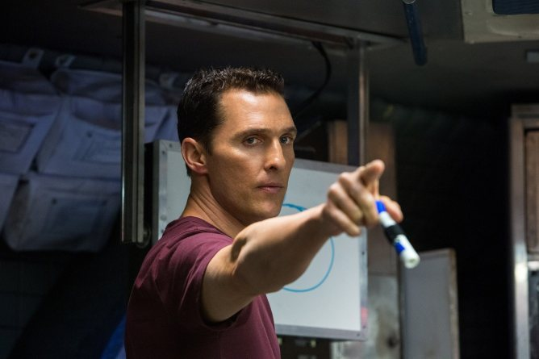

|  | 조셉 쿠퍼배우는 매튜 매커너히. 기내 더빙은 송준석. 이 영화의 주인공이다. 과거에는 NASA에서 테스트 파일럿으로 근무했으나 NASA가 폐쇄된 후에 농부가 되었다. 그 후 결혼하여 1남(톰) 1녀(머피)를 두었으나 아내가 일찍 병사하는 바람에 장인과 아이들과 함께 농장에서 살고 있었다. 과학적이고 이성적인 것을 중시하는 성격이다. 머피가 자기 방에 유령[1]이 있는 것 같다고 이야기하자 과학적으로 생각해보라며 이야기를 하는 장면이나, 밀러 행성에서 탈출한 후 어느 행성으로 갈지 토론할 때 아멜리아가 감성적으로 에드먼즈 행성에 갈 것을 호소하자 이성적으로 판단하자고 다그치는 장면에서 알 수 있다. NASA 엔지니어 시절을 비행기 추락사고의 PTSD 때문이든 열정적인 연구활동 때문이든 잊지 못하고 있으며, 과학과 기계를 사랑하는 공돌이 체질도 있다. 초반에 머피와 톰 때문에 학교로 불려가는데, 교사들이 '지금 인류에게 필요한 건 엔지니어가 아니라 농부다'라는 말이나 "달 착륙은 미국이 소련과 경쟁에서 이기려고 날조한 사건"이라는 말을 듣고는 씨바 할 말을 잊었습니다. 그 뒤에 장인에게 "인류는 예전에는 하늘을 보며 꿈을 꿨는데 지금은 땅만 보며 한숨만 쉰다"고 투덜거리기도 하고, 하늘을 나는 무인기를 발견하자 흥분해서 옥수수밭을 짓밟으면서 차를 몰아 무인기를 쫓아가 잡는 등의 장면들이 그의 성격을 나타낸다. 그러던 어느 날, 큰 황사가 있던 날에 창문을 닫지 않았던 머피의 방에서 중력 이상 현상 때문에 특정 장소에만 떨어진 모래를 분석해 어떤 좌표를 얻게되는데, 그 좌표를 따라 간 곳인 샤이엔 산에서 나사로 프로젝트에 참여하게 되어 다시 우주선의 파일럿이 되어 웜홀로 향하게 된다. 극 초반부에서 파일럿으로 활동하던 당시에 조종하던 우주선이 중력 이상으로 추락한 것 때문에 트라우마가 생겨서인지 악몽을 꾸는 장면이 나온다. 하지만 파일럿 실력은 굉장히 뛰어나서 NASA를 고의적이지 않게 찾아가자 '당신 같은 우수한 우주선 조종사가 필요하다'며 NASA 연구원들에게서 인듀어런스호의 조종사가 되어달라고 부탁 받게된다. 세상이 하도 막장이라 시뮬레이터 밖에 나가본 경력자가 없던 참에 이런 인물이 자신들을 찾아왔으니 NASA와 브랜드 박사는 좋아할 수밖에. 우주선 조종 외에는 자잘한 실수, 방심이나 오판을 하기도 하지만, 우주선 조종 능력은 그야말로 절대적인 수준으로 묘사된다. 시뮬레이션 된 상황부터 돌발 상황까지 모두 완벽에 가까운 판단과 조종 능력을 보여주며 인듀어런스호 일행을 구해낸다. 작중 만 박사의 무리한 도킹으로 일어난 폭발로 인해 무려 60RPM 이상으로 빠르게 회전하는 인듀어러스 호와의 도킹마저 성공시켰다. 밀러 행성에서의 거대 파도로 인한 사고 때문에 3시간이나 머문 덕분에 다른 사람들보다 23년을 느리게 살게 되었고, 블랙홀을 이용한 스윙바이시 56년을 추가로 느리게 산 탓에 연도로 따지면 엔딩 당시 124세지만[3] 신체와 정신은 당연히 45세이다. 토성까지 가는 데도 2년이 걸렸고, 이후 밀러 행성에서 3시간을 보내 지구 시간으로는 23년쯤 흐른 뒤에 돌아왔는데 이때 머피가 "이젠 떠날 때의 아버지의 나이와 지금의 제가 나이가 같다."고 한 걸 보면 결혼을 매우 일찍 한 듯. 참고로 쿠퍼는 머피가 10살 때 떠났다. |